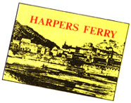

OK, self-publishing sounds like a meaningful and satisfying career, especially for someone who likes to write anyway . . . but is it profitable? Can a person really eke out a living in the small-book business?
Well, considering the fact that you'd have to sell eight hundred thirty-three one-buck booklets a month just to gross $10,000 a year-and the fact that nobody has that many friends and relatives-the prospects, at first, don't look all that encouraging.
Remember, however, that Random House wasn't built in a day. Nor was Little Brown House. Steve Brown started with a single book four years ago . . . but it wasn't until recently that he had enough titles-and enough sales-to warrant entering the business on a fulltime basis.
"You have to realize," explains Steve, who now publishes 12 new books annually, "that at first, when you have only one or two titles to market, you can't expect to make tremendous amounts of money. In fact, you probably won't make more than $100 or $150 a month. That is considerable, though, for someone who must work full time at another job. It obviously makes a great second income."
As an example of the kind of financial return that can come from the writing, producing, and selling of small books, Steve Brown's Harpers Ferry guide-which is now in its second edition-cost 50 cents a copy to print . . . and in one six-month period sold 2,000 copies at $2.50 each. In addition, The Little Brown Cookbook cost 29.5 cents apiece to produce, sells for up to $1.75 a copy, and has gone through three printings in as many years. With a little arithmetic it's plain to see that yes, by golly, a guy could make a living in this business.
Of course, Steve doesn't actually pocket $1.75 or even $1.45 on every copy of the Brown family cookbook that's sold, because the books are "wholesaled out" to dealers for $1.00 a copy. Nonetheless, direct sales to customers do account for a healthy chunk of Steve's overall business.
"I am very fortunate, living here in Harpers Ferry, to know a number of store owners in the area who always agree to sell my books for me, free of charge. However, there are other avenues of direct sale . . . such as local newspapers. Whenever I'm at work on a new book, I send a pre-publication notice to papers in the area. They are usually happy to print information about the booklet, how much it will cost, and where it can be bought. I get a fair amount of mail-order inquiries this way. When the cookbook (or whatever) finally does come out, I follow up by sending a copy to the local newspapers for review.
"It really doesn't matter where you live, because there are always gift and card shops, magazine stands, Walden bookstores, and others that will be happy to carry your books, if they sell."
How does Steve know whether or not a given title will sell? "Not even the New York publishers know that," he admits. "However, if it is something of local or seasonal interest that can be keyed to a holiday, a city event, a tourist rush-there are many ways to do this, really-or if it's of universal interest, you can be fairly sure that it will sell OK. I would hope that it is not a book of poems . . . you want to capture the buyer's interest, not his sympathy.
"What I do is this: I try the idea out on all my friends. I say to them, 'What do you think about this?' Or I'll say, 'Do you want to read anything about such and such?' Most importantly, of course, I'll ask: 'Would you pay money for something of this nature?' This is really the only way to get a feeling for whether or not your idea is worth pursuing."
All right. So you've put your thoughts down on paper, arranged for illustrations, and decided how the book will look. Now, how much do you charge? What price literary creativity?
Steve Brown: "Printers always say that the retail price of a book should be five times its printing cost I don't agree with this. A better rule is to always make sure your cost is small, and then charge a price that is consistent with the nature of the book. Who is it designed for? Tourists? Students, perhaps? Housewives? To some extent, these things will determine how much you may reasonably charge.
"Something else I've found to be very important is the fact that a 'break' point in pricing my books is reached at around two dollars. There is a psychological barrier at two dollars where I meet sales resistance. For that reason, most of my books are priced at $1.95. If you decide to charge more than two dollars, well, it really doesn't matter whether you ask two-and-a-quarter or three seventy-five. Harpers Ferry, because it appeals to tourists, carries an exceptional (for me) price tag-two dollars and fifty cents-and I get away with it."
While Steve sells many of his guide and cook books right in Harpers Ferry itself, some Little Brown House releases are distributed nationally. This is the case, for instance, with Clara Cassidy's Up In Years, which is handled by nationwide mail-order book supplier Miles Kimball of Oshkosh, Wisconsin. Steve also deals with Book People of Berkeley, California, and other regional and national distributors. The names of these organizations can be found in the Yellow Pages of any large city.
"I don't really recommend the use of middlemen to people who are just getting started," Brown advises, "though you may want to look into this aspect of the business eventually. A beginner should try first to maximize direct sales, because that's where the greatest profits are. And the name of this game, don't forget, is to achieve the greatest return on a small initial investment. You don't need consignment sales for that. In fact, you'll be forever waiting to get your money."
Still interested in self-publishing? Says Steve Brown, "I'm more than happy to answer questions or help people with problems regarding printing, typesetting, or any other part of the business." If you do write Mr. Brown (Box 179, Harpers Ferry, W. Va. 25425), however, be sure to enclose a self-addressed stamped envelope and a dollar for his time. If the help Steve gave us in the preparation of this article is any indication, you'll get $20.00 worth of information back in return.
[1] Contact local bookstores, gift shops, and other businesses to see if they'll agree to sell your publications without a commission. What's in it for them? Offer to arrange an autograph party. . . a gala event which will bring people into the store. Often, the shop's manager will trade publicity of this type for whatever profits he might make on your books.
[2] Advise local civic organizations of topics on which you-or your company's other authors-can speak. Send a
monthly revised list of lecture subjects to church groups, women's clubs, the Lions, Kiwanis, Rotary, etc. Service organizations are always in need of speakers to address their memberships at meetings . . . and this is just the kind of public relations that sells books.
[3] Ask local banks, dry cleaners, or other businesses if they'd like to buy copies of your titles to give away as premiums to new customers. Make up a rubber stamp or have the title page itself printed to say "Compliments of Pitsville City Bank." Many copies of the Little Brown House Colonial Heritage Cookbook have been distributed in this manner.
[4] A hundred or more books a year can be sold to libraries across the country. How? Write to the H.W. Wilson Co., 950 University Ave., Bronx, N.Y. 10452 and ask for an information slip. They'll tell you how your booklets can appear in the Vertical File Index, a monthly journal which lists a variety of non-hardcover, non-trade books of interest to libraries. Often, a city library cannot afford to buy, catalogue, and shelve hard-back best-sellers . . . but can and will send money for small, inexpensive tracts and pamphlets.
[5] Take out tiny classified ads in special interest magazines appropriate to your book's subject. Little Brown House publications are advertised in Early American Life magazine, where a $20.00 advertisement returns many times its cost in orders for books. Experiment with different wordings . . . and keep the ad running. Orders may only trickle in at first, but they'll slowly build as readers scrutinize back issues and keep seeing your ad.
One of Little Brown House's upcoming works will deal with ghost legends. To publicize this book, a radio play adapted from one chapter of the manuscript is being offered-in recorded form-to local radio stations free. . . so long as they plug the publisher.
There you have six ways of increasing your direct sales. For still more, let your imagination run free!
|
 |
|
|